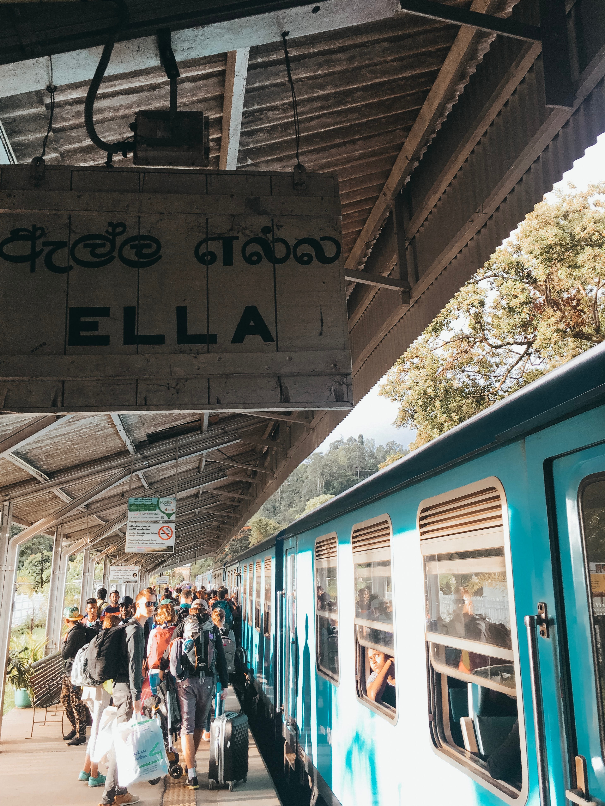

Ella is one of a remarkable destinations in Sri Lanka Tourism!!!
As Ella is relatively small, it’s easy enough to get around the town itself by walking. It’s even possible
to reach most of the attractions in the area on foot, so unless you’re planning to go further afield then
renting a bike isn’t necessary.
The best time of year to visit Ella is from January to March, as these months bring the driest weather to this part of Sri Lanka. Visiting at this time means you’ll be able to enjoy hikes and the surrounding nature with less chance of rain affecting your stay.
 The best time of year to visit Ella is from January to March, as these months bring the driest weather to this part of Sri Lanka. Visiting at this time means you’ll be able to enjoy hikes and the surrounding nature with less chance of rain affecting your stay.
For the rest of the year though, Ella is a great place to visit as long as you aren’t put off by a bit of rain. The hottest month is April, although this brings more rain to the area than January-March.
While the thought of visiting a bridge may not immediately strike you as particularly interesting, it’s actually a combination of the picturesque location and bridge itself that make this spot worth a visit. The beautifully designed bridge cuts through Sri Lanka’s lush countryside surrounded by tea plantations and forest.
If you time your visit well you’ll be able to watch a train pass over the bridge, which makes for a great photo opportunity. To ensure this you’re best to ask a local in advance when trains are expected – although keep in mind that they sometimes can run very late!
The arches themselves are best viewed from below or by the tunnel. To reach the nine arch bridge from Ella you can either walk or take a tuk tuk.

One of the most popular things to do when in Ella is visit Ravana falls – one of the widest waterfalls in Sri Lanka. Around 5 kilometres outside of the town.
Although it’s possible to cool off in falls, be extremely careful if you choose to as there have been over 30 deaths here. To reach the falls you’ll either need to rent a bike or hire a tuk tuk for a return journey (which should cost around 1000 rupees).
If you’re looking to do some hiking, Ella rock should be the first place on your list. At the top you’ll be rewarded with spectacular views of Sri Lanka’s hill country, with greenery stretching as far as you can see..
Towards the end of the hike it becomes very steep depending on the route you take. Although the steeper route is quicker and more direct, it’s a lot tougher so it’s up to you if you’d rather take the long way round.

Once you’re at the top, make sure to check out the 2nd viewpoint, which is around 500m to the right of Ella rock. The view here is well worth taking in as well and is less crowded than Ella rock itself.
At the top there are fantastic views of Sri Lanka’s picturesque countryside in every direction. It’s a very popular spot to visit for sunrise or sunset, as the colours make this scenic spot even more special! The trail is well marked and so there are no issues doing it in low light.
he easiest way to do the hike is to follow this guide by Atlas and Boots, as they break down the directions into simple steps. It’s important to know that a number of locals will try to lead you a different route so that when you’re lost they can offer their services as a guide in exchange for payment. If you stick to the guide above though, you can’t go wrong.
A great option for good quality Sri Lankan food on a budget. With only a few tables available, you’ll need to arrive early to avoid a wait.
Meals start from around 300 rupees, with the chicken kottu being one of our favourite options. If you’re looking for a cooking class in Ella they are offered here, but spaces are limited so it’s best to book a couple of days in advance.